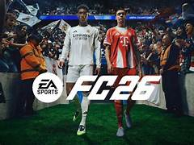

Carátula del Trabajo.
• Universidad: Universidad Autónoma de Entre Ríos
• Facultad: Facultad de Ciencias y Tecnologías
• Carrera: Licenciatura en Sistemas de Información
• Cátedra: Fundamentos de Computación
• Trabajo Práctico: Trabajo Práctico N°1 “Streaming de videojuegos”
• Profesores: Bioing. Ismael Cassi ; Lic. Paolo Orundés Cardinali
• Integrantes del Grupo: Brunelli Julián; Gutierrez Santos; Valenti Jerónimo, Rebai Aramis
• Comisión: 4
• Fecha de Entrega: 31 de Octubre
• Año Lectivo: 2025
Juego elegido: FC 26

Requeriminetos MÍNIMOS y MÁXIMOS:
Requerimientos mínimos y recomendados según ChatGPT
Requerimiento mínimo según IA Copilot Requerimiento recomendado segun IA Copilot
Requerimientos mínimos y recomendados según ChatGPT